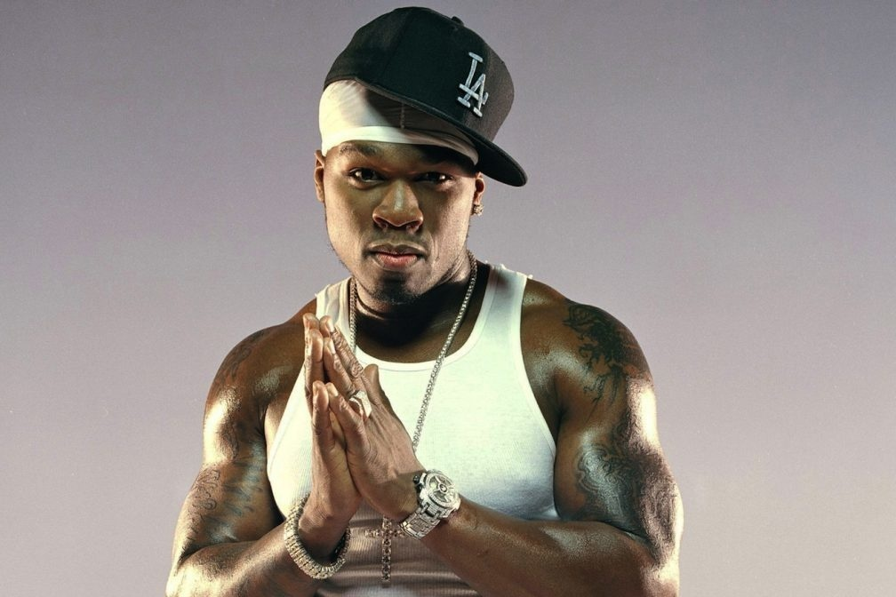

Curtis James Jackson III, mais conhecido pelo seu nome artístico 50 Cent (Nova Iorque, 6 de julho de 1975), é um rapper, ator, diretor, roteirista e empresário norte-americano. Ficou conhecido com o lançamento dos álbuns Get Rich or Die Tryin' (2003) e The Massacre (2005). Get Rich or Die Tryin' obteve a certificação de platina seis vezes pela RIAA e vendeu cerca de 13 milhões de cópias em todo o mundo. Seu disco The Massacre foi certificado cinco vezes pela RIAA e vendeu 11 milhões de cópias.
Nascido em South Jamaica, Queens, Jackson iniciou no tráfico de droga com onze anos, durante a epidemia do crack da década de 1980. Depois de deixar o tráfico de drogas para começar uma carreira no rap, ele foi baleado por nove tiros durante um incidente em 2000, depois de tal acontecimento Jackson recebeu uma operação médica de alto risco, apesar que isso indicaria que o atirador era alguém a quem Jackson estava devendo dinheiro por drogas. Após o lançamento do álbum Guess Who's Back?, Jackson foi descoberto pelo rapper Eminem e assinou contrato com a Interscope Records. Com ajuda de Eminem e de Dr. Dre, que produziu o seu primeiro maior sucesso comercial, 50 Cent tornou-se um dos rappers com mais vendas no planeta. Em 2003, fundou a G-Unit Records, com seus parceiros do grupo G-Unit: Tony Yayo, Young Buck e Lloyd Banks.
Curtis Jackson III cresceu no bairro do Brooklyn, Queens, na cidade de New York, sem a presença do pai e de seu irmão, somente com a companhia de sua mãe, Sabrina, que era traficante de cocaína na região. Ela deu à luz o Curtis com apenas quinze anos e acabou sendo assassinada em 1988, quando ele estava com a idade de doze anos. Sabrina ficou inconsciente após colocarem drogas em sua bebida, e teve o gás de seu apartamento ligado e as janelas fechadas. Após seu falecimento, Curtis foi levado para morar na casa dos avós junto com outros oito tios e tias. Ele relembra: "Minha avó me disse: 'Sua mãe não virá para casa. Ela não irá voltar para buscá-lo. Você vai ficar com a gente agora.' A partir deste momento eu comecei a me adaptar um pouco mais com as ruas."
Jackson começou a cantar rap no porão de um amigo que usava turntables para gravar músicas instrumentais. Em 1996, um amigo o apresentou a Jam Master Jay, DJ do Run-D.M.C., o qual estava organizando sua gravadora, a Jam Master Jay Records. A primeira aparição oficial de Jackson no meio da música foi na canção React, com o grupo Onyx, no álbum Shut 'Em Down, de 1998. Ele creditou Jay como a principal influência para escrever bons raps. Jay produziu o primeiro álbum de 50 Cent, que no entanto nunca foi lançado. Em 1999, após sair da Jam Master Jay Records, produtores destacados no ramo musical o convidaram para fazer parte da Columbia Records. Eles o colocaram em um estúdio no noroeste de Nova Iorque, onde Jackson gravou trinta e seis músicas em duas semanas. Oito delas foram incluídas no seu não-oficial álbum Power of the Dollar, lançado em 2000. Ele começou a agora extinta gravadora Hollow Point Entertainment com seu amigo de G-Unit, Bang 'Em Smurf.
Em 24 de maio de 2000, Jackson foi atacado por um pistoleiro, acusado de ser Darryl "Hommo" Baum na casa antiga de seus avôs em South Jamaica. Ele entrou no carro de um amigo, mas voltou a residência para pegar uma joia. Seu filho estava dentro de casa enquanto sua avó estava no quintal da frente. Após voltar para o banco de trás do carro, outro veículo parou perto. Um assaltante, em seguida, caminhou até o lado esquerdo de Jackson com uma pistola 9mm e disparou nove tiros á queima-roupa. Ele foi acertado por todos os tiros: um na mão, um no braço, um no quadril, um em cada perna, um no tórax e outro na bochecha esquerda. O tiro no rosto resultou em uma língua inchada, a perda de um dos sisos e uma pequena mudança na voz de 50 Cent. O seu amigo também foi atingido por um projétil na mão; ambos foram levados ao hospital onde Jackson passou treze dias. Baum, o alegado atirador, foi assassinado três semanas depois. Baum era amigo e guarda-costas do lutador Mike Tyson.
50 Cent lembrou do incidente, dizendo: "Isso acontece tão rápido que você não tem sequer chance de atirar de volta… Eu estava com medo o tempo inteiro e olhava no retrovisor e falava 'Merda, alguém atirou na minha cara!'". Usou um andador durante as primeiras seis semanas, e após cinco meses já estava totalmente recuperado. Quando saiu do hospital, foi com sua então namorada e seu filho para as montanhas de Poconos. O regime e exercícios realizados por 50 Cent lhe fizeram recuperar o físico muscular.
Enquanto estava no hospital, ele assinou contrato com a Columbia Records, mas este acabou sendo retirado após 50 Cent compor a música "Ghetto Qu'ran". Incapaz de encontrar um estúdio para trabalhar nos Estados Unidos, Jackson foi para o Canadá. Junto com seu parceiro de negócios Sha Money XL, 50 Cent gravou mais de trinta músicas para mixtapes com o propósito de aumentar a sua reputação. E isto aconteceu, sendo que em 2002, ocorreu o lançamento da mixtape Guess Who's Back?. Agora com maior popularidade e apoiado pelo grupo G-Unit, ele lançou mais um álbum, 50 Cent Is the Future.
Em 2002, Eminem ouviu uma cópia do CD Guess Who's Back?, entregue através do advogado de 50 Cent para o seu gerente. Impressionado com o álbum, Eminem convidou Jackson para voar até Los Angeles, onde foi apresentado ao produtor e rapper Dr. Dre. Após assinar um contrato recorde no valor de US$ 1 milhão, 50 Cent lançou outra mixtape: No Mercy, No Fear. Ela destacou uma faixa nova, "Wanksta", a qual foi incluída na trilha sonora do filme 8 Mile.
Em fevereiro de 2003, 50 Cent lançou seu primeiro álbum comercial, Get Rich or Die Tryin'. A Allmusic o descreveu como "provavelmente o melhor álbum de estreia de um rapper na década". A Rolling Stone também o classificou positivamente, com sintetizadores adequados, um flow sereno e um ritmo similar ao funk dos anos 1960. O álbum estreou na primeira posição da Billboard 200, vendendo 872 mil cópias nos quatro primeiros dias. O principal e primeiro single, In da Club quebrou os recorde como a canção mais ouvida na Billboard de todos os tempos em apenas uma semana. A Interscope concedeu a 50 Cent sua própria gravadora, a G-Unit Records. Ela foi formada originalmente por Cent, Lloyd Banks, Tony Yayo e Young Buck, os membros originais do G-Unit. Em março de 2005, Jackson lançou o seu segundo álbum de estúdio, intitulado The Massacre, o qual vendeu 1,14 milhões de cópias nos quatro primeiros dias (sendo o número mais alto em um ciclo de vendas abreviado) e ficou na primeira posição da Billboard 200 por seis semanas. Ele se tornou o primeiro artista a ter três singles no top cinco da Billboard na mesma semana com "Candy Shop", "Disco Inferno" e "How We Do". A Rolling Stone notou que "a principal arma de 50 é a sua voz, implantando uma sonoridade semelhante a um tenor amador na maioria das canções".
Após uma discussão com Game, 50 Cent convidou Olivia e o tradicional grupo Mobb Deep para entrarem na G-Unit Records, e ambos aceitaram. Spider Loc, M.O.P., 40 Glocc e Young Hot Rod ingressaram posteriormente. Jackson demonstrou interesse em trabalhar com rappers que não pertenciam ao G-Unit, como Lil' Scrappy da BME, LL Cool J da Def Jam, Mase da Bad Boy Records e Freeway da Roc-A-Fella, os quais gravaram com ele. Em setembro de 2007, 50 Cent lançou seu terceiro álbum de estúdio oficial, chamado Curtis, o qual foi inspirado no que aconteceu antes do lançamento de Get Rich or Die Tryin'. Ele estreou na segunda posição da Billboard 200, vendendo 691 mil unidades na primeira semana, permanecendo atrás de Graduation, de Kanye West, com quem disputou a liderança das vendas, já que os dois discos foram lançados no mesmo dia.
Em 10 de setembro de 2008 ele confirmou no programa Total Request Live da MTV o lançamento do seu quarto álbum de estúdio, Before I Self Destruct: "Ele já está pronto e será lançado em novembro". Em 5 de janeiro de 2009, lançou o primeiro single deste, I Get It In, o qual foi produzido por Dr. Dre. A lista oficial das músicas que estariam presentes foi divulgada no mesmo dia. Em 3 de setembro, Jackson lançou o vídeo da música "Flight 187", a qual introduzia sua nova mixtape. Este ascendeu a rivalidade que há entre 50 Cent e Jay-Z. O álbum foi oficialmente lançado nos Estados Unidos em 9 de novembro de 2009.
50 Cent anunciou em uma entrevista ao site ContactMusic que estaria no trabalho de um novo álbum, chamado Black Magic, inspirado nas discotecas da Europa, pertencendo ao estilo musical conhecido como eurodance. Para isto ele comunicou sua primeira turnê da carreira em 21 de abril, a The Invitation Tour, que começou no fim de maio. Pouco tempo depois, o artista anunciou que desistiu da ideia porque as letras até então escritas não se encaixavam no quesito de Black Magic (que em português significa Magia negra). Também confirmou que está trabalhando em um quinto álbum de estúdio, Street King Immortal.
Em maio de 2010, 50 Cent se apresentou à imprensa 25 quilos mais magro, para viver um jogador de futebol com câncer no filme Things Fall Apart. No dia 3 de setembro, o rapper mostrou apoio a seu antigo mentor Eminem, e apareceu na turnê "Home & Home Tour", de Eminem e Jay-Z, onde cantou hits como "Crack a Bottle", e apareceu junto com Dr. Dre, desmentindo boatos de que 50 não trabalhava mais com o produtor Dre. 50 Cent fez uma participação especial no novo álbum de Michael Jackson, chamado Michael, na canção "Monster"(Que foi um ponto baixo, já que a música mais tarde foi-se provada falsa, não são os vocais de Jackson, é cantada por Jason Malachi) . Em 2014 , 50 Cent lançou o álbum "Animal Ambition" e também reuniu a G-unit.
Letra da Musica In Da Club
Go, go, go, go, go, go Go, shorty It's your birthday We gon' party like it's your birthday We gon' sip Bacardi like it's your birthday And you know we don't give a fuck it's not your birthday You can find me in the club, bottle full of bub' Look, mami, I got the X, if you into takin' drugs I'm into havin' sex, I ain't into makin' love So come give me a hug, if you into getting rubbed You can find me in the club, bottle full of bub' Look, mami, I got the X, if you into takin' drugs I'm into havin' sex, I ain't into makin' love So come give me a hug, if you into getting rubbed When I pull out up front, you see the Benz on dubs When I roll 20 deep, it's 20 knives in the club Niggas heard I fuck with Dre, now they wanna show me love When you sell like Eminem, and the hoes they wanna fuck But, homie, ain't nothing change hoes down, G's up I see Xzibit in the cut, that nigga roll that weed up If you watch how I move, you'll mistake me for a playa or pimp Been hit wit' a few shells, but I don't walk wit' a limp (I'm ight) In the hood, in L.A., they saying "50 you hot" They like me, I want them to love me like they love 'Pac But holla, in New York them niggas'll tell ya I'm loco And the plan is to put the rap game in a chokehold I'm full of focused man, my money on my mind I got a mill' out the deal and I'm still on the grind Now shorty said she feeling my style, she feeling my flow Her girlfriend wanna get bi and they ready to go You can find me in the club, bottle full of bub' Look, mami, I got the X, if you into takin' drugs I'm into havin' sex, I ain't into makin' love So come give me a hug, if you into getting rubbed You can find me in the club, bottle full of bub' Look, mami, I got the X, if you into takin' drugs I'm into havin' sex I, ain't into makin' love So come give me a hug, if you into getting rubbed My flow, my show brought me the dough That bought me all my fancy things My crib, my cars, my clothes, my jewels Look, nigga, I done came up and I ain't change And you should love it, way more then you hate it Nigga, you mad? I thought that you'd be happy I made it I'm that cat by the bar toasting to the good life You that faggot ass nigga trying to pull me back, right? When my jaws get to bumpin' in the club it's on I wink my eye at you, bitch, if she smiles she gone If the roof on fire, let the motherfucker burn If the talk ain't 'bout money, homie, I ain't concerned I'm a tell you what Banks told me, "Cuz, go 'head switch the style up If the niggas hate then let 'em hate and watch the money pile up" Or we can go upside your head wit' a bottle of bub' They know where we fuckin' be You can find me in the club, bottle full of bub' Look, mami, I got the X, if you into takin' drugs I'm into havin' sex, I ain't into makin' love So come give me a hug, if you into getting rubbed You can find me in the club, bottle full of bub' Look, mami, I got the X, if you into takin' drugs I'm into havin' sex, I ain't into makin' love So come give me a hug, if you into getting rubbed Don't try to act like you don't know where we be neither, nigga We in the club all the time, nigga, so pop, pop off, nigga G-Unit.
